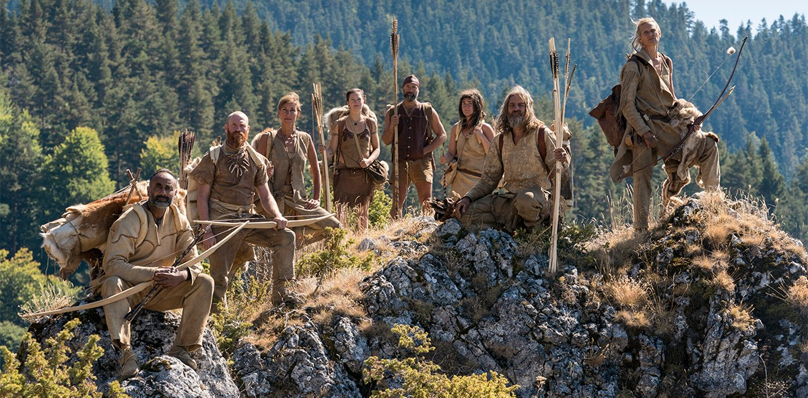
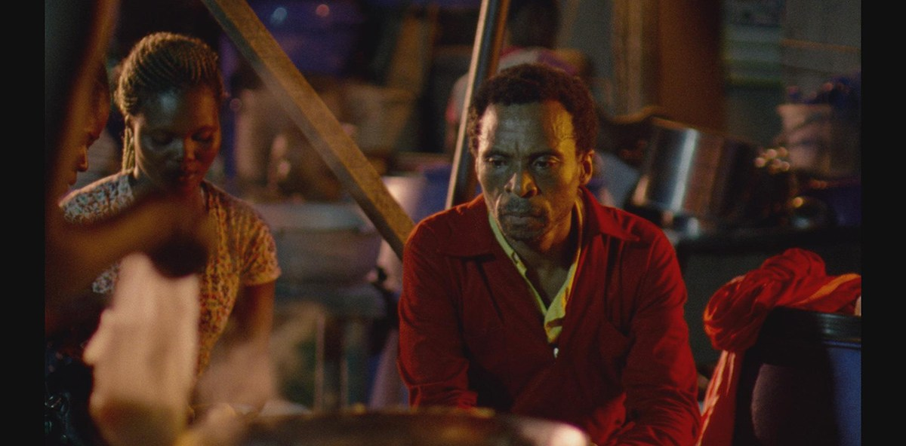
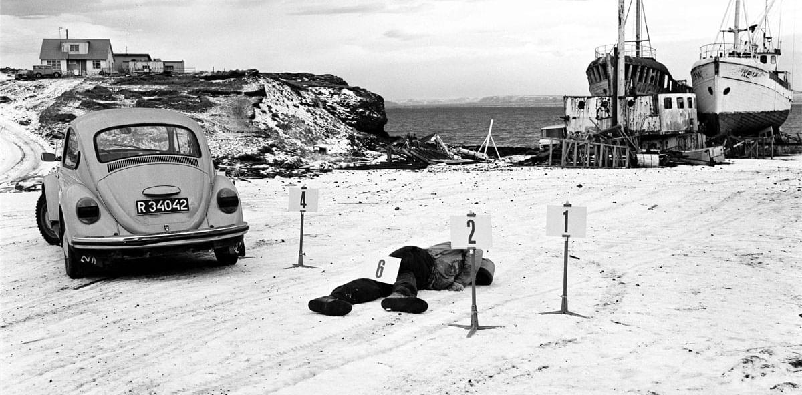
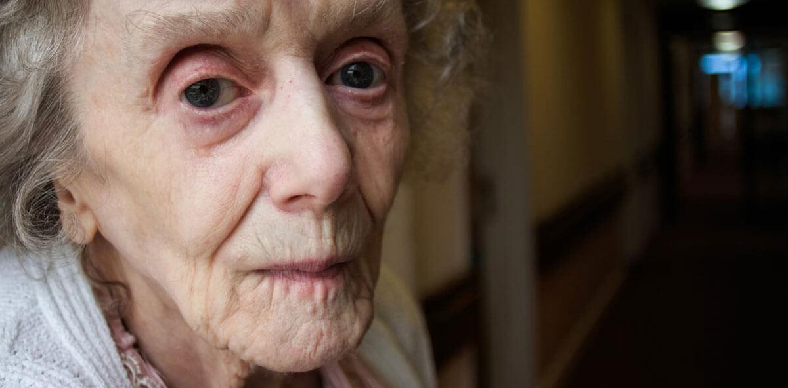
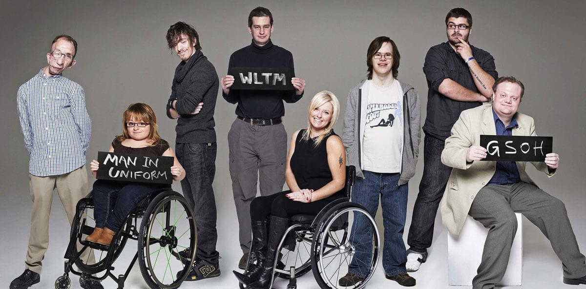
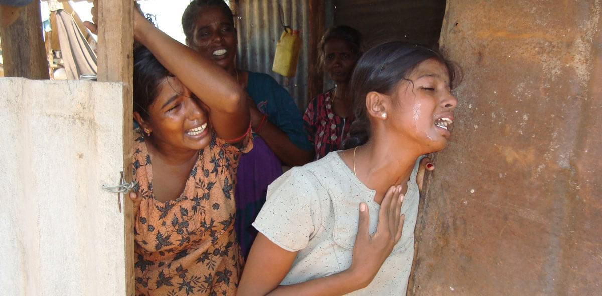
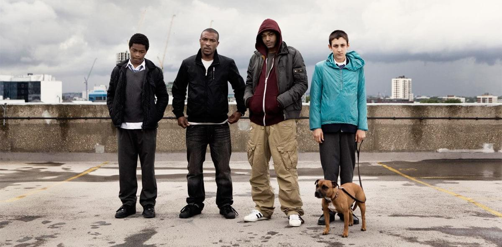
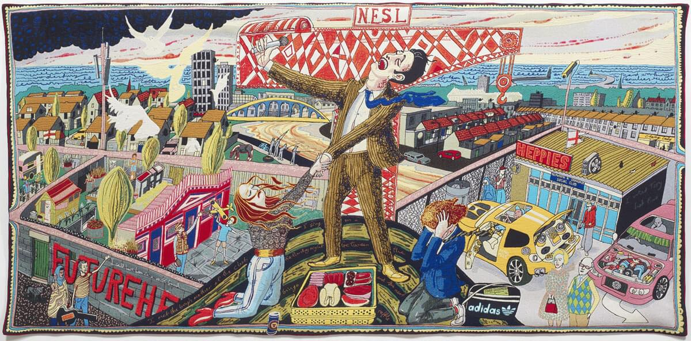

About
Projects
Clients
Approach
Blog
Testimonials
Contact
Stormborn – BBC Two

Surviving the Stone Age – Channel 4

Eyimofe – London Film Festival
Union Chapel – Iconic London Music Venue

Out of Thin Air – BBC Storyville
My Brother The Terrorist – BBC Three

The Year the Town Hall Shrank – BBC Four
Tales of the Grim Sleeper – Theatrical Release

The Undateables – Channel 4

No Fire Zone: The Killing Fields of Sri Lanka – UK and International Release

Top Boy – Channel 4
André Simon Food and Drink Book Awards

All In The Best Possible Taste with Grayson Perry – Channel 4
Previous
Next
Intelligent communications
campaigns for the creative industries and projects with a social impact